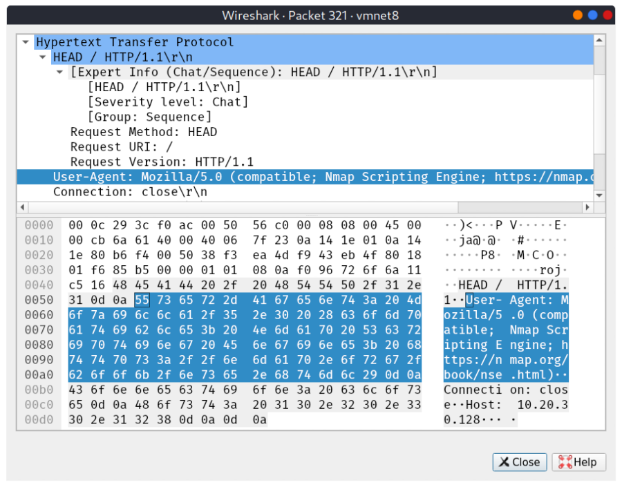

TRYHACKME NMAP COMPLETE
List the IPs to be scanned without actually scanning them:
(-n to skip Reverse DNS lookup)
nmap -nsL Target_List/Target_IP
nmap -nsL 10.10.12.13/29
nmap -nsL 10.10.0-255.101-125
(With Reverse DNS lookup)
nmap -sL Target_List/Target_IP
nmap -sL 10.1
nmap -sL 10.10.0-255.101-125
Host Discovery “without” any Port Scans:
(General Host Discovery)
nmap -sn Target_List/Target_IP
Note: Previous versions used -sP (Check man nmap)
(ARP only Host Discovery)
nmap -PR -sn Target_List/Target_IP
(PING/ICMP echo only Host Discovery) ICMP 8/0
nmap -PE -sn Target_List/Target_IP
Remember that an ARP query will precede the ICMP request if your target is on the same subnet.
As Ping is blocked accross most machines. We can use ICMP Timestamp
(ICMP Timestamp Host Discovery) ICMP 13/14
nmap -PP -sn Target_List/Target_IP
As Ping is blocked accross most machines. We can use ICMP Address Mask
(ICMP Address Mask Host Discovery) ICMP 17/18
nmap -PM -sn Target_List/Target_IP
Host Discovery using TCP & UDP Ping
TCP SYN ping: nmap -PS -sn Target_List/Target_IP
-PS80 (default)
-PS20-25
-PS80,443,8080
Super User: SYN SYN/ACK RST
Normal User: SYN SYN/ACK ACK
TCP ACK ping: nmap -PA -sn Target_List/Target_IP
-PS80 (default)
-PS20-25
-PS80,443,8080
Super User: ACK RST
Normal User: Cannot Perform this
UDP Ping: nmap -PU -sn Target_List/Target_IP
Uses an uncommon port as only if port is closed we get a response & know that system is online. (If port is open, we get no response)
Reverse DNS Lookup:
By Default nmap does Reverse DNS lookup. This can be skipped by -n option.
Now, to use reverse DNS lookup for all hosts(even offline) can be done using -R option
Port Scans:
TCP Connect Scan
By Default it scans most common 1000 ports:
nmap -sT Target_List/Target_IP
TCP SYN Scan
nmap -sS Target_List/Target_IP
UDP Scan:
nmap -sU Target_List/Target_IP
Note:
As UDP Scan is very slow. So the Following Scans the Commonly used top 20 UDP Ports
nmap -sU --top-ports 20 <target>
Fine Tuning & Managing Scope:
-F
We can use -F to enable fast mode and decrease the number of scanned ports from 1000 to 100 most common ports.
--top-ports <number> : Eg. --top-ports 10 will scan 10 most common ports
-r
It is worth mentioning that the -r option can also be added to scan the ports in consecutive order instead of random order.
This option is useful when testing whether ports open in a consistent manner, for instance, when a target boots up.
-p
Port list:
-p22 : Scan 22
-p20-25 : Scan 20,21,22,23,24,25
-p22,80 : Scan 22 & 80
-p- : Scan all 65535
-T
Timmings. -T<0-5>
-T0 : Paranoid (Slowest)
-T1 : Sneaky (Real World)
-T2 : Polite
-T3 : Normal (Nmap Default)
-T4 : Aggressive (CTFs)
-T5 : Insane (Fastest)
Slow --→ Helps in IDS evasion
Alternatively we can control the packet rate:
--min-rate <number> Eg. --min-rate 10
--max-rate <number> Eg. --max-rate 20
Probing Parallelization: (Determines the number of parallel probes for host discovery & port scans)
--min-parallelism <numprobes>
--max-parallelism <numprobes>
Eg. --min-parallelism 512 : Indicates that nmap has to maintain atlest 512 parallel probes for host discovery & port scans.
Advanced Port Scans:
Null Scan:
Send TCP with no flags set. If Port Open or Firewall is present we get no response.
If no firewall & port is closed: We get a RST flag response. (indicating port is closed)
nmap -sN Target_List/Target_IP
Note: It can say with certainity if a port is closed. But for open ports its not sure as no response is recorded. (open|filtered)
FIN
Send TCP with FIN flag set. If Port Open or Firewall is present we get no response.
If no firewall & port is closed: We get a RST flag response. (indicating port is closed)
nmap -sF Target_List/Target_IP
Note: It can say with certainity if a port is closed. But for open ports its not sure as no response is recorded. (open|filtered)
Xmas
Send TCP with URG,PSH,FIN flag set. If Port Open or Firewall is present we get no response.
If no firewall & port is closed: We get a RST flag response. (indicating port is closed)
nmap -sX Target_List/Target_IP
Note: It can say with certainity if a port is closed. But for open ports its not sure as no response is recorded. (open|filtered)
Null, FIN & Xmas are best used when there is a stateless firewall. (That blocks SYN flag packets)
However, a Stateful Firewall will still block these 3 scans.
Maimon Scan:
Uses a TCP packet with FIN & ACK flag set. Normally Open/Closed all ports should respond with a RST flag. So not very useful.
However, in certain BSD-Derived systems, if the port is open the packet is dropped & no response is recorded. (Used to find Open|Filtered Ports)
nmap -sM Target_List/Target_IP
TCP ACK Scan:
We send a TCP packet with ACK flag set. Irrespective of whether port is open or closed we get a RST flag in response. (So we cannot check for open ports)
However, if a port is blocked by the firewall, the packet is dropped. (Indicating Firewall blocked it)
Thus, the ports where we receive RST flag, we know that its accessible in firewall rules. (Can be open|closed)
nmap -sA Target_List/Target_IP
TCP Window Scan:
We send a TCP packet with ACK flag set. Irrespective of whether port is open or closed we get a RST flag in response.
But upon checking the window position in the TCP header, we see certain differences.
If Firewall is blocking the port, packet is dropped. Else we get a RST flag.
nmap -sW Target_List/Target_IP
Custom Scan:
nmap --scanflags <FLAGS> Target_List/Target_IP
We can se multiple flags in our request and test.
-scanflags RSTSYNFIN : It will set the RST, SYN and FIN flags
-scanflags SYNACKURGPSHRSTFIN : It will set all flags: SYN, ACK, URG, PSH, RST and FIN
Spoof & Decoy:
Spoof:
To make target think nmap coming from different IP/MAC & send responses back to that IP/MAC. (Note: -Pn is required as we don't want any packets back to source)
IP Spoof
nmap -e NET_INTERFACE -Pn SPOOFED_IP Target_List/Target_IP
eg: nmap -e eth0 -Pn 10.10.10.10 Target_List/Target_IP
Responses will be sent to 10.10.10.10
MAC Spoof (Only works in all systems on same ethernet or wifi network)
nmap --spoof-mac SPOOFED_MAC Target_List/Target_IP
Decoy:
To send packets from multiple dummy targets as well as the attacker.
Keywords:
ME: Attacker IP
RND: Random IP
nmap -D 10.10.0.1,10.10.0.2,RND,RND,ME Target_List/Target_IP
Fragmented Packets:
Used for evasion against firewalls & IDS. (Old)
nmap -f Target_List/Target_IP : Divided packet into 8 bytes fragments plus change.
nmap -ff Target_List/Target_IP : Divides packet into 16 bytes fragments plus change.
Idle/Zombie Scan:
It spoofs the scan from zombie_ip and records the IP ID of the zombie/idle device for any increment more than 1 in IP ID.
if IP ID increased more than 1, it means port is open & the zombie/ID device received a SYN/ACK from target & responded with a RST(thus increasing its IP ID by 2).
if IP ID remained the same, it means either the port is closed(a RST flag is recieved by zoombie → IP ID increase by 1) or firewall is blocking(no communication is recieved → IP ID remains same)
nmap -sI ZOMBIE_IP Target_List/Target_IP
Getting More Details:
--reason
Option gives the reason of all the outputs
-v
Option for verbose display
-vv
For very verbose display
-d
Detailed debug output
-dd
Very detailed debug output
--source-port PORT_NUM
Specify source Port Number
--data-length NUM
Append random data to reach given length
Service Detection:
Service Detection is achieved through -sV. It does a complete 3 way hankshake
--version-intensity LEVEL : LEVEL (0-9) 0: Lightest 9: Most Complete
--version-light : Its equivalent to --version-intensity 2
eg. nmap -sV --version-intensity 7 Target_List/Target_IP
eg, nmap -sV --version-light Target_List/Target_IP
OS Detection:
-O
Capital O option is used for OS detection.
Generally type of OS is correctly determined in most cases. (Windows/Linux)
However, the version of running OS is not so accurate.
eg. nmap -sS -O Target_List/Target_IP
Traceroute:
-traceroute
It is used to show traceroute details in nmap scan. (It runs opposite to normal windows/linux traceroute)
eg. nmap -sS -traceroute Target_List/Target_IP
Scripts:
nmap -sS -sC Target_List/Target_IP : This uses the default script, same as --script=default
nmap -sS --script=CATEGORY Target_List/Target_IP : This uses the mentioned category
nmap -sS --script “xyz.nse” Target_List/Target_IP : This searches for xyz.nse in /usr/share/nmap/scripts folder
Categories--->
auth : authentication related
broadcast : discover hosts by sending broadcast messages
brute : performs brute-force password auditing against logins
default : default scripts, same as -sC
discovery : retrieve accessible information such as database tables and dns names
dos : detects servers vulnerable to denial of service
exploit : attempts to exploit various vulnerable services
external : checks using a third party plugin such as Geoplugin and Virustotal
fuzzer : launch fuzzing attacks
intrusive : intrusive scripts such as brute-force attacks and exploitation
malware : scans for backdoors
safe : safe scripts that wont crash the target
version : retrieve service versions
vuln : checks for vulnerabilities or exploit vulnerable services
Note: Multiple Scripts can be run using , as separator
eg.
nmap --script=smb-enum-users,smb-enum-shares Target_List/Target_IP
Script Arguments:
Some script requires additional arguments, the name of those arguments can be found by opening the scirpt in a text editor.
Then to pass the arguments to script we use --script-args ‘arga-name_1=value,arg_name_2=value’
Example-1:
Database Enumeration (Using Script Args)
nmap --script=mysql-databases.nse --script-args 'mysqluser=root,mysqlpass="password"' 10.10.213.240
Example-2:
Uploading a file using HTTP-POST
nmap --script http-put --script-args http-put.url='/dav/shell.php',http-put.file='./shell.php' <Target>
Nmap Scripts Help Options:
By Default the Nmap Scripts come with help options which can be accessed by the following.
nmap --script-help <script-name>
Note: List of Nmap Scripts in Text Format: /usr/share/nmap/scripts/script.db
Updating Scripts
Automatic:
Updating nmap (apt upgrage nmap)
Manual:
sudo wget -O /usr/share/nmap/scripts/<script-name>.nse https://svn.nmap.org/nmap/scripts/<script-name>.nse
nmap --script-updatedb
Note: You would require the same "updatedb" command if you were to make your own NSE script and add it into Nmap -- a more than manageable task with some basic knowledge of Lua!
Outputs:
Formats: Normal, Grepable, XML & Script Kiddie
-oN : Normal
-oG : Grepable
-oX : XML
-oA : Writes output in all 3 Normal, Grepable & XML formats
-oS : Script Kiddie (Just normal output with styled charecters, no significant need)
Misc:
-A : Equivalent to -sV -O -sC -traceroute
Firewall Evasion (Along with Techniques discussed above)
Reference: https://nmap.org/book/man-bypass-firewalls-ids.html
The following switches are of particular note:
-f # Used to fragment the packets (i.e. split them into smaller pieces) making it less likely that the packets will be detected by a firewall or IDS.
An alternative to -f, but providing more control over the size of the packets: --mtu <number>, accepts a maximum transmission unit size to use for the packets sent. This must be a multiple of 8.
--scan-delay <time>ms # used to add a delay between packets sent. This is very useful if the network is unstable, but also for evading any time-based firewall/IDS triggers which may be in place.
--badsum # this is used to generate in invalid checksum for packets. Any real TCP/IP stack would drop this packet, however, firewalls may potentially respond automatically, without bothering to check the checksum of the packet. As such, this switch can be used to determine the presence of a firewall/IDS.
--data-length <number> # Allows you to append an arbitrary length of random data to the end of packets
Making a ports variable with quick scan and using this open ports for detailed scan
ports=$(nmap -p- --min-rate 1000 -T4 10.10.10.150 | grep ^[0-9] | cut -d'/' -f 1 | tr '\n' ',' | sed s/,$//)
nmap -sC -sV -p$ports 10.10.10.150 --open
Enumerating Samba with nmap:
nmap -p 445 --script=smb-enum-shares.nse,smb-enum-users.nse 10.10.99.173
Scanning RPC Port for NFS Shares:
nmap -p 111 --script=nfs-ls,nfs-statfs,nfs-showmount 10.10.99.173
Red Teaming
Example: The figure below shows the User-Agent that will be logged by the remote web server when running Nmap scans with the -sC option when Nmap probes the web server. If an HTTP user agent isn't set at the time of running the given Nmap script, the logs on the target system could log a user agent containing Nmap Scripting Engine. This can be mitigated using the option --script-args http.useragent="CUSTOM_AGENT"

By default, it will logged as above which we do not want in a Red Team Operation. Thus, use custom user agents.